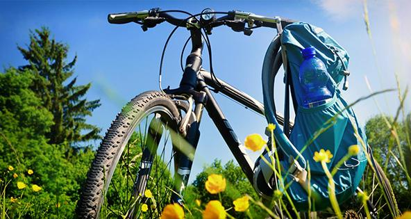
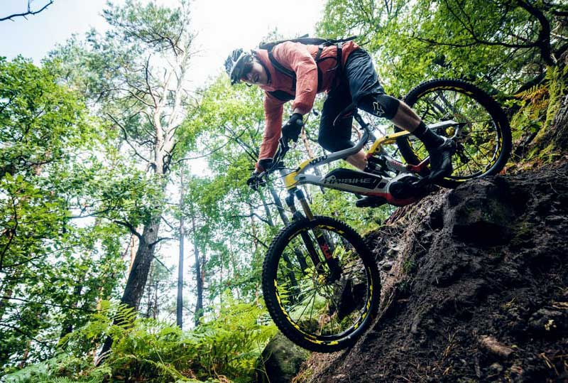

Яка користь для здоров'я від велосипеда? Невже у вас виникло це питання? Здається, вже всі знають, що це приємно і корисно, що користь від катання на велосипеді багатостороння і величезна.
Наприклад, коли ви їдете на велосипеді лісовими стежками, ніякі повсякденні проблеми вас більше не цікавлять. Є тільки ви і природа. Чи це не щастя! Велосипедні прогулянки суттєво поліпшують загальний емоційний стан людини, відволікають його від різних проблем і відновлюють настрій. Користь велосипеда щодо нервової системи доведена різними дослідженнями.
- Покращення самопочуття
- Покращення зовнішнього вигляду
- Зміцнення здоров'я
- Економія часу і грошей
- Розвиток дітей
Покращення самопочуття
Поїздка на велосипеді з раннього ранку відмінно допомагає швидше прокинутися. А завдяки регулярним фізичним навантаженням на велосипеді, ваш сон буде більш здоровим, а значить, ви будете прокидатися з новими силаи. Регулярні поїздки на велосипеді виводять з організму стресовий гормон - кортизол, який при частих навантаженнях заважає вам заснути. Таким чином, велопрогулянки допомагають вам позбавитися від безсоння.
Їзда на велосипеді покращує обмін речовин. Завдяки чому підвищується апетит і поліпшується перетравлення їжі. Пам'ятайте, як хочеться їсти після велосипедної прогулянки? Поява апетиту - ознака активного обміну речовин.
Завдяки регулярним поїздкам на велосипеді ви підвищуєте загальну витривалість організму, відчуваєте себе бадьоріше, активніше і міцніше, легше переносите навантаження під час робочого дня, а ваш емоційний фон стабілізується.
Поїздки на велосипеді - найпростіший і швидкий спосіб отримати дозу гормонів щастя. Їзда на велосипеді, як і інші циклічні види спорту, - відмінний спосіб відволіктися від неприємних думок. Спробуйте проїхати хоча б пару кілометрів - все зайве з голови вилетить тут же. Монотонні рухи, розмірене дихання - все це автоматично призводить до ладу думки і почуття.
Велосипедні прогулянки благотворно впливають на загальний емоційний стан, сприяють зміцненню нервової системи - поліпшується ваш настрій і загальне самопочуття, ви отримуєте величезний заряд бадьорості. Велосипед - найкращий спосіб «випускати пару» після робочого дня.
Їзда на велосипеді збільшує потік крові і кисню до мозку, що активізує і відновлює дію рецепторів, сприяє створенню нових клітин мозку в гіпокампі - області, яка відповідає за пам'ять. Крім цього, письменники, музиканти, художники, керівники і багато інших професіонали використовують велопрогулянки для перемикання і стимулювання творчого мислення. Адже завдяки посиленого притоку кисню в мозок відбувається активізація нейронної діяльності.
Покращення зовнішнього вигляду
Велосипед дуже корисний тим, хто хоче скинути зайві кілограми. Під час велосипедної поїздки спалюється велика кількість калорій, зменшуються небажані відкладення в області стегон. При цьому ваш організм спалює жир не тільки під час поїздки, а й протягом декількох годин після. А ті, хто їздить швидко, але на короткі дистанції, спалюють в кілька разів більше жиру, ніж ті, хто їздять довго, але більш повільно.
Регулярна їзда на велосипеді допомагає уповільнити старіння шкіри. Відбувається це тому, що збільшена циркуляція крові доставляє кисень і поживні речовини клітинам шкіри більш ефективно, одночасно виводячи шкідливі токсини. Велопрогулянки також створюють ідеальні умови для формування колагену, який, в свою чергу, допомагає зменшити виникнення зморшок.
Регулярні поїздки на велосипеді допомагають вам тренувати м'язи ніг, грудей, спини, рук. Завдяки чому покращується їх форма і одночасно підвищується витривалість м'язів.
Зміцнення здоров'я
Кардіонагрузку, яку забезпечує катання на велосипеді, сприяє зміцненню серцевого м'яза, підвищення тонусу судин, зниження рівня «поганого» і підвищенню рівня «хорошого» холестерину. Завдяки цьому значно знижується ризик серцевих захворювань.
При їзді на велосипеді ваші легені працюють набагато активніше, ніж зазвичай - під час тривалих, хоча б протягом години, велосипедних прогулянок легені людини працюють в повну силу. Завдяки примусової вентиляції легені швидше звільняються від токсичних речовин, яких в надлишку практично в будь-якому сучасному місті. При цьому, звичайно, варто намагатися прокладати свій маршрут ближче до природи і подалі від жвавих доріг.
Катання на велосипеді дуже корисно для тренування очей. Посудіть самі: де б не пролягав ваш маршрут - по лісових стежках або тротуарах - вам доводиться пильно стежити за дорогою. Ваш погляд постійно фокусується і переключається з предмета на предмет. Таке тренування очних м'язів знижує ризик виникнення короткозорості і загострює зір.
Той, хто регулярно проводить свій вільний час, катаючись на велосипеді, істотно підвищує здатність організму опиратися інфекціям (імунітет), завдяки чому значно рідше страждає сезонними захворюваннями - грип, застуду тощо.
Економія часу і грошей
Кожен хоче заощадити, і їзда на велосипеді – це один із методів зберегти певну частину зарплати. Володіння велосипедом обходиться набагато дешевше, ніж автомобілем. Взяти хоча б ту ж парковку, яка майже скрізь платна, щорічне страхування, яке виливається в копієчку в залежності від багатьох факторів, технічне обслуговування, адже складний механізм не кожному підвладний. А істотна економія на паливі, це взагалі окремий пункт, з огляду на його сьогоднішню вартість. Напевно витрати на паливо становлять левову частку від усіх витрат на авто.
Велосипед - це безперечно швидше, ніж ходити пішки. А якщо порівнювати з автомобілем, то вам не потрібно стояти в пробках, через які ми довше стоїмо, ніж їдемо. Велосипед дозволяє самостійно прокладати власний маршрут, що не підлаштовуючись під розклад громадського транспорту і карту пробок. Відсутність проблем з паркуванням. Велосипед проїде там, де не проїде автомобіль. Велосипед дуже легко припаркувати - він займає значно менше місця, ніж автомобіль.
Ціни на велосипеди дуже демократичні і в обслуговуванні велосипеди, як правило, невибагливі. Якщо ви купили велосипед, вам не треба його щодня заправляти, не треба платити податок і страховку, якщо в велосипеді щось зламається - то його ремонт не потребує багато грошей.
Розвиток дітей
Велоспорт - це прекрасний сімейне дозвілля, де знайдеться місце кожному. Найменша дитина може забратися на сидіння або спеціальне крісло і приєднатися до вашого подорожі.
Дитина, який катається на дитячому велосипеді, отримує всю ту користь, що і дорослі. Велосипед закладає основу для здоров'я дитини в майбутньому. Крім цього, варто пам'ятати, що діти знаходяться під впливом своїх батьків. Якщо ваші діти вас бачать, як ви регулярно катаєтеся на велосипеді, вони скоро захочуть наслідувати ваш приклад.
Спільне катання на велосипеді сприяє виділенню гормонів гарного настрою, так що всі дрібні конфлікти і роздратування зникнуть без сліду. Поїздка також хороша можливість поговорити про щось романтичному.
Крім гарного здоров'я велосипед позитивно впливає і на соціальну сторону вашого життя. Велопрогулянки - відмінний спосіб познайомитися з однодумцями, які з високою часткою ймовірності можуть стати вашими друзями - адже вас об'єднують спільні інтереси.
Підсумки
Велоспорт:
- Користь для здоров’я
- Користь з екологічної точки зору
- Користь з економічної точки зору
- Користь з соціальної точки зору